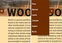

Setting Text on an Angle Box Sizing to the Rescue Circular Text Wrap with CSS Styling Telephone Links Animating a Sprite Sheet Outline your text  A Transition for Your Mobile Menu Selection colors Creating a Grid of Images